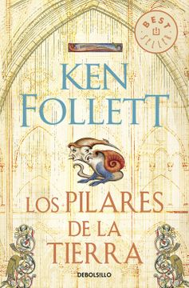

Tom estaba construyendo una casa en un gran valle, al pie de la empinada ladera de una colina y junto a un burbujeante y límpido arroyo. Los muros alcanzaban un metro de altura y seguían subiendo rápidamente. Los dos albañiles que Tom había contratado trabajaban sin prisa aunque sin pausa de sol a sol, con sus paletas, mientras el peón que los acompañaba sudaba bajo el peso de los grandes bloques de piedra. Alfred, el hijo de Tom, estaba mezclando argamasa, cantando en voz alta al tiempo que arrojaba paletadas de arena en un pilón. Junto a Tom había también un carpintero, que en su banco de trabajo tallaba cuidadosamente un trozo de abedul con una azuela.
Alfred tenía catorce años y era alto como Tom. Éste superaba en una cabeza a la mayoría de los hombres y Alfred sólo medía unos cinco centímetros menos y seguía creciendo. Físicamente también eran parecidos. Ambos tenían el pelo castaño claro y los ojos verdosos con motas color marrón. La gente decía que los dos eran bien parecidos. Lo que más los diferenciaba era la barba. La de Tom era castaña y rizada, mientras que Alfred sólo podía presumir de una hermosa pelusa rubia. Tom recordaba con cariño que había habido un tiempo en que su hijo tenía el pelo de ese mismo color. Ahora Alfred estaba convirtiéndose en un hombre, y Tom hubiera deseado que se tomara algo más de interés por el trabajo, porque aún tenía mucho que aprender para ser albañil como su padre. Pero hasta el momento los principios de la construcción sólo parecían aburrir y confundir al muchacho.
Cuando la casa estuviera terminada sería la más lujosa en muchos kilómetros a la redonda. La planta baja se utilizaría como almacén, y su techo abovedado evitaría el peligro de incendio. La gran sala, que en realidad era donde la gente hacía su vida, estaría encima y se accedería a ella por una escalera exterior. La altura haría que resultase difícil atacar la casa y en cambio muy fácil defenderla. Adosada al muro de la sala habría una chimenea que expulsaría el humo del hogar. Se trataba de una innovación impresionante. Tom sólo había visto una casa con chimenea, pero le había parecido una idea tan excelente que de inmediato se sintió dispuesto a copiarla. En un extremo de la casa, encima de la sala, habría un pequeño dormitorio, porque eso era lo que ahora exigían las hijas de los condes, demasiado delicadas para dormir en la sala con los hombres, las mozas de la servidumbre y los perros de caza. La cocina la construiría aparte, pues más tarde o más temprano todas se incendiaban y el único remedio era que estuviesen alejadas y conformarse con que la comida llegara tibia a la mesa.